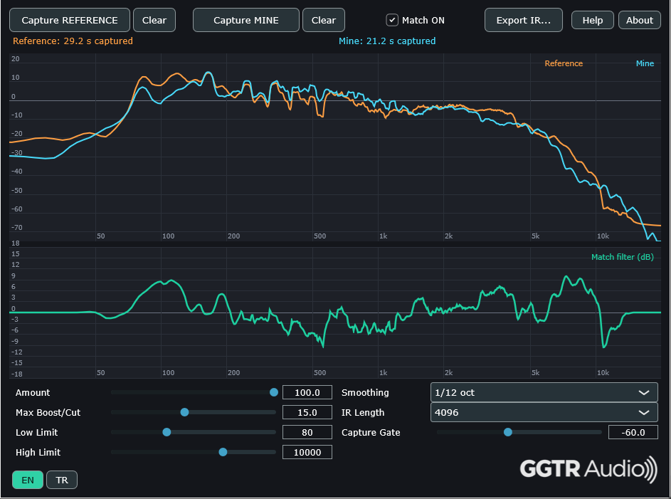

GGTR AUDIO · FREE PLUGIN
GGTR Tone Match
Compare your guitar sound with a reference and create a corrective filter based on their frequency balance. Audition the result in your DAW and export it as a WAV impulse response.
GGTR Audio develops practical tools for guitarists and music creators — making useful audio technology more accessible and sharing our products freely.

Our first release helps guitarists bring their own tone closer to a reference recording.
Compare your guitar sound with a reference and create a corrective filter based on their frequency balance. Audition the result in your DAW and export it as a WAV impulse response.
Use a reference recording to capture the tonal balance you want to approach.
Analyze your own signal and compare its frequency characteristics with the reference.
Generate an adjustable filter that helps move your sound toward the reference.
Export the resulting filter as a WAV impulse response for compatible workflows.
Tone Match focuses on frequency balance. It does not clone an amplifier, distortion, dynamics, cabinet, microphone or room.
A straightforward process that fits into your existing guitar production setup.
Choose the recording whose overall tonal balance you want to explore.
Feed your own guitar signal into the plugin and compare the two signals.
Audition the matching filter, fine-tune it, and export a WAV IR when ready.
Our goal is to make hard-to-access tools used in guitar and music production more accessible in plugin form, develop new ideas, and share the products we create with everyone for free.
GGTR Audio is an independent development initiative focused on practical audio tools and creative workflows. We build, test and improve our products with real-world use in mind.
Explore the plugin, read the documentation and get the latest release.